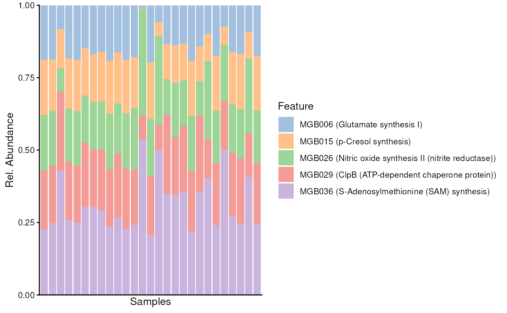
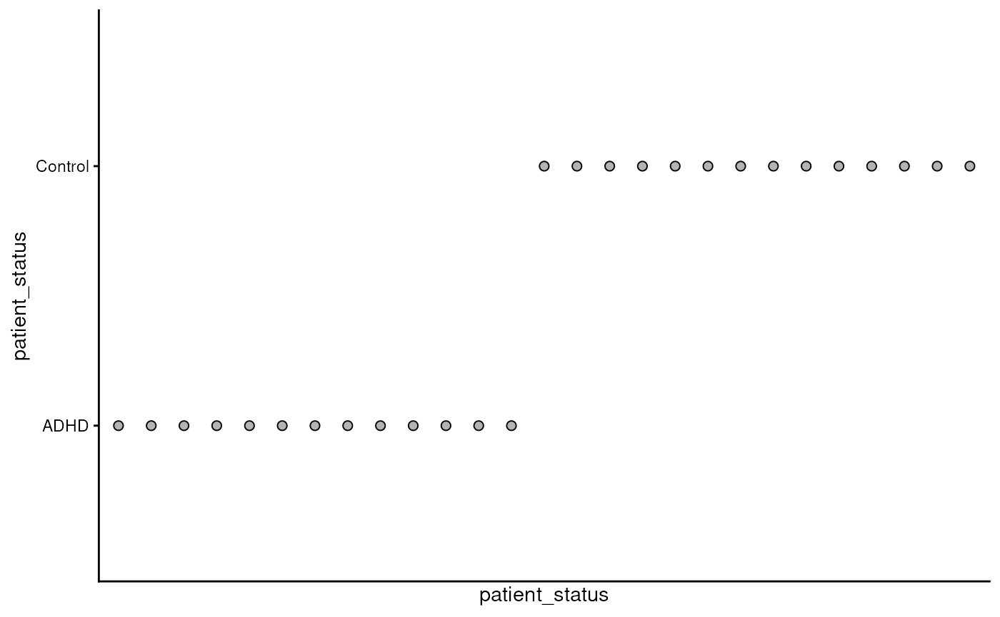
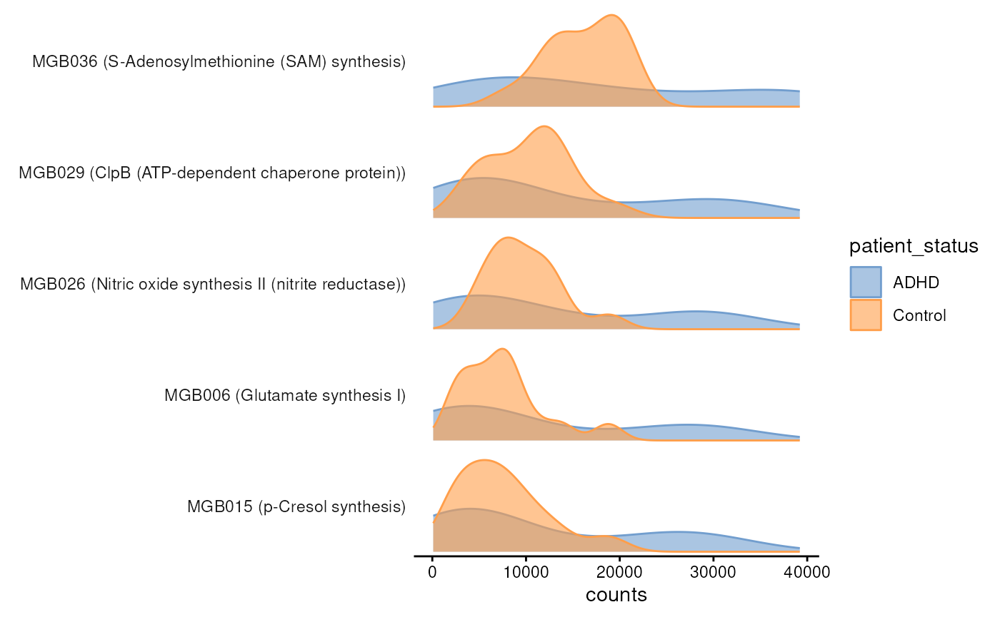
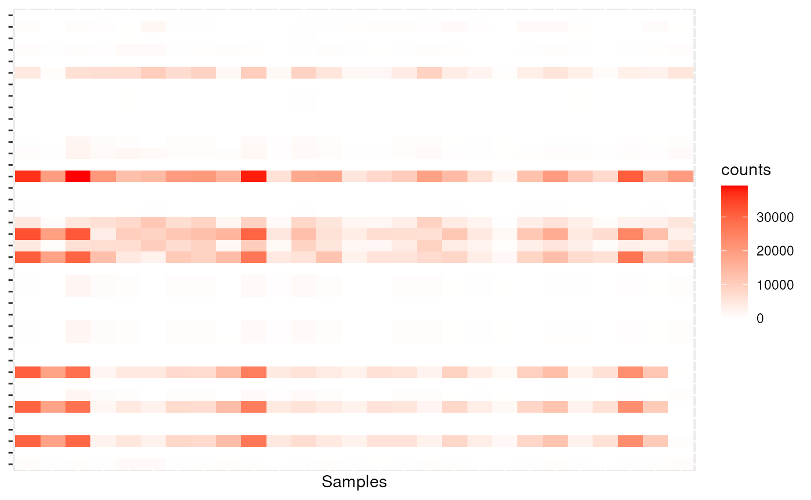

vignettes/ariadne.Rmd
ariadne.Rmdariadne provides a rapid and robust approach to incorporate taxonomic and functional module analyses into your bioinformatic workflow. Despite the presence of specialised bioinformatic tools, on-demand functional annotation of taxonomic features directly in R has remained challenging. To make this simple, ariadne offers tools to rapidly annotate features with taxonomic or functional modules based on online resources (BugSigDB, ChocoPhlAn, Web of Life and UniProt). In addition, we provide tools to incorporate, analyse and visualise module information into popular standardised containers, such as TreeSummarizedExperiment.
if (!requireNamespace("BiocManager", quietly = TRUE))
install.packages("BiocManager")
BiocManager::install("ariadne")Here, the terms “module” and “signature” are used in place of each other.
library(ariadne)
library(mia)
#> Loading required package: MultiAssayExperiment
#> Loading required package: SummarizedExperiment
#> Loading required package: MatrixGenerics
#> Loading required package: matrixStats
#>
#> Attaching package: 'MatrixGenerics'
#> The following objects are masked from 'package:matrixStats':
#>
#> colAlls, colAnyNAs, colAnys, colAvgsPerRowSet, colCollapse,
#> colCounts, colCummaxs, colCummins, colCumprods, colCumsums,
#> colDiffs, colIQRDiffs, colIQRs, colLogSumExps, colMadDiffs,
#> colMads, colMaxs, colMeans2, colMedians, colMins, colOrderStats,
#> colProds, colQuantiles, colRanges, colRanks, colSdDiffs, colSds,
#> colSums2, colTabulates, colVarDiffs, colVars, colWeightedMads,
#> colWeightedMeans, colWeightedMedians, colWeightedSds,
#> colWeightedVars, rowAlls, rowAnyNAs, rowAnys, rowAvgsPerColSet,
#> rowCollapse, rowCounts, rowCummaxs, rowCummins, rowCumprods,
#> rowCumsums, rowDiffs, rowIQRDiffs, rowIQRs, rowLogSumExps,
#> rowMadDiffs, rowMads, rowMaxs, rowMeans2, rowMedians, rowMins,
#> rowOrderStats, rowProds, rowQuantiles, rowRanges, rowRanks,
#> rowSdDiffs, rowSds, rowSums2, rowTabulates, rowVarDiffs, rowVars,
#> rowWeightedMads, rowWeightedMeans, rowWeightedMedians,
#> rowWeightedSds, rowWeightedVars
#> Loading required package: GenomicRanges
#> Loading required package: stats4
#> Loading required package: BiocGenerics
#> Loading required package: generics
#>
#> Attaching package: 'generics'
#> The following objects are masked from 'package:base':
#>
#> as.difftime, as.factor, as.ordered, intersect, is.element, setdiff,
#> setequal, union
#>
#> Attaching package: 'BiocGenerics'
#> The following objects are masked from 'package:stats':
#>
#> IQR, mad, sd, var, xtabs
#> The following objects are masked from 'package:base':
#>
#> anyDuplicated, aperm, append, as.data.frame, basename, cbind,
#> colnames, dirname, do.call, duplicated, eval, evalq, Filter, Find,
#> get, grep, grepl, is.unsorted, lapply, Map, mapply, match, mget,
#> order, paste, pmax, pmax.int, pmin, pmin.int, Position, rank,
#> rbind, Reduce, rownames, sapply, saveRDS, table, tapply, unique,
#> unsplit, which.max, which.min
#> Loading required package: S4Vectors
#>
#> Attaching package: 'S4Vectors'
#> The following object is masked from 'package:utils':
#>
#> findMatches
#> The following objects are masked from 'package:base':
#>
#> expand.grid, I, unname
#> Loading required package: IRanges
#> Loading required package: Seqinfo
#> Loading required package: Biobase
#> Welcome to Bioconductor
#>
#> Vignettes contain introductory material; view with
#> 'browseVignettes()'. To cite Bioconductor, see
#> 'citation("Biobase")', and for packages 'citation("pkgname")'.
#>
#> Attaching package: 'Biobase'
#> The following object is masked from 'package:MatrixGenerics':
#>
#> rowMedians
#> The following objects are masked from 'package:matrixStats':
#>
#> anyMissing, rowMedians
#> Loading required package: SingleCellExperiment
#> Loading required package: TreeSummarizedExperiment
#> Loading required package: Biostrings
#> Loading required package: XVector
#>
#> Attaching package: 'Biostrings'
#> The following object is masked from 'package:base':
#>
#> strsplit
#> This is mia version 1.17.9
#> - Online documentation and vignettes: https://microbiome.github.io/mia/
#> - Online book 'Orchestrating Microbiome Analysis (OMA)': https://microbiome.github.io/OMA/docs/devel/
library(miaViz)
#> Loading required package: ggplot2
#> Loading required package: ggraph
#>
#> Attaching package: 'miaViz'
#> The following object is masked from 'package:mia':
#>
#> plotNMDS
# Import dataset
data("Tengeler2020", package = "mia")
tse <- Tengeler2020
library(bugsigdbr)
# Download database
bsdb <- importBugSigDB()
# Retrieve microbial signatures
bsdb.mods <- getSignatures(bsdb, tax.id.type = "metaphlan")
# Add module membership to rowData
tse <- addModules(tse, bsdb.mods)
# Import GBM
gbm <- importModules("GBM")
# Import ko-to-uniref90 mapping
ko.uniref90 <- importMapping(
"ChocoPhlAn",
from = c("eggnog", "ko"),
to = "uniref90"
)
#> Retrieving mappings from /github/home/.cache/R/ariadne/21385bd32039_map_eggnog_uniref90.txt.gz.
#> Retrieving mappings from /github/home/.cache/R/ariadne/213819235d6a_map_ko_uniref90.txt.gz.
# Map modules to taxa
gbm.mods <- mapModules(
gbm,
ko.uniref90,
mode = "andor",
uniprot = TRUE,
remove.empty = TRUE
)
#> 139644 taxa were queried from UniProt.
#> 27305 items were mapped to 40 modules.
# Add module membership to rowData
tse <- addModules(
tse,
gbm.mods,
by = 1L,
group = "taxonomy"
)
# Collect all module names
all.mods <- c(names(bsdb.mods), names(gbm.mods))
# Agglomerate features by every module
altExp(tse, "modules") <- agglomerateByModule(tse, by = 1L, group = names(gbm.mods))
# Find top 5 modules by average count
top.mods <- getTop(
altExp(tse, "modules"),
assay.type = "counts"
)Make some plots
tse <- swapAltExp(
tse,
name = "modules",
saved = "features",
withColData = FALSE
)
plotAbundance(
tse[top.mods, ],
assay.type = "counts",
as.relative = TRUE,
col.var = "patient_status",
order.col.by = "patient_status",
add.legend = FALSE
)
#> $abundance
#>
#> $patient_status
plotAbundanceDensity(
tse,
layout = "density",
n = 5,
assay.type = "counts",
colour.by = "patient_status"
)
library(ggplot2)
mse <- meltSE(tse, assay.type = "counts", add.col = TRUE)
ggplot(mse, aes(x = SampleID, y = FeatureID, fill = counts)) +
geom_tile() +
#facet_wrap(. ~ patient_status) +
scale_fill_gradient2(low = "white", high = "red") +
labs(x = "Samples") +
theme(axis.text = element_blank(),
axis.title.y = element_blank(),
axis.ticks.x = element_blank())
# Heatmap(assay(tse))
tse <- transformAssay(tse, method = "relabundance")
# library(rstatix)
# df <- meltSE(tse, assay.type = "counts", add.col = TRUE)
# df |>
# group_by(FeatureID) |>
# t_test(counts ~ patient_status) |>
# filter(!is.na(p)) |>
# adjust_pvalue(method = "fdr") |>
# filter(p < 0.05) |>
# select(FeatureID, p, p.adj)
# my.listWe hope that ariadne will be useful for your research. Please use the following information to cite the package and the overall approach. Thank you!
## Citation info
citation("ariadne")
#> Warning in citation("ariadne"): could not determine year for 'ariadne' from
#> package DESCRIPTION file
#> To cite package 'ariadne' in publications use:
#>
#> Benedetti G, Bastiaanssen T, Lahti L (????). _ariadne: Module
#> INtegration by On-demand Translation of Annotations using R_. R
#> package version 0.0.5,
#> <https://github.com/thomazbastiaanssen/ariadne>.
#>
#> A BibTeX entry for LaTeX users is
#>
#> @Manual{,
#> title = {ariadne: Module INtegration by On-demand Translation of Annotations using R},
#> author = {Giulio Benedetti and Thomaz Bastiaanssen and Leo Lahti},
#> note = {R package version 0.0.5},
#> url = {https://github.com/thomazbastiaanssen/ariadne},
#> }ariadne originates from the joint effort of the R/Bioconductor community. It is mainly based on the following software:
You can reach us by one of the communication channels listed here. We are happy to receive questions, suggestions as well as contributions. For the last point, check the contributor guidelines.
R session information:
#> R version 4.5.1 (2025-06-13)
#> Platform: x86_64-pc-linux-gnu
#> Running under: Ubuntu 24.04.3 LTS
#>
#> Matrix products: default
#> BLAS: /usr/lib/x86_64-linux-gnu/openblas-pthread/libblas.so.3
#> LAPACK: /usr/lib/x86_64-linux-gnu/openblas-pthread/libopenblasp-r0.3.26.so; LAPACK version 3.12.0
#>
#> locale:
#> [1] LC_CTYPE=en_US.UTF-8 LC_NUMERIC=C LC_TIME=en_US.UTF-8 LC_COLLATE=en_US.UTF-8
#> [5] LC_MONETARY=en_US.UTF-8 LC_MESSAGES=en_US.UTF-8 LC_PAPER=en_US.UTF-8 LC_NAME=C
#> [9] LC_ADDRESS=C LC_TELEPHONE=C LC_MEASUREMENT=en_US.UTF-8 LC_IDENTIFICATION=C
#>
#> time zone: UTC
#> tzcode source: system (glibc)
#>
#> attached base packages:
#> [1] stats4 stats graphics grDevices utils datasets methods base
#>
#> other attached packages:
#> [1] bugsigdbr_1.15.3 miaViz_1.17.9 ggraph_2.2.2
#> [4] ggplot2_4.0.0 mia_1.17.9 TreeSummarizedExperiment_2.17.1
#> [7] Biostrings_2.77.2 XVector_0.49.1 SingleCellExperiment_1.31.1
#> [10] MultiAssayExperiment_1.35.9 SummarizedExperiment_1.39.2 Biobase_2.69.1
#> [13] GenomicRanges_1.61.4 Seqinfo_0.99.2 IRanges_2.43.2
#> [16] S4Vectors_0.47.2 BiocGenerics_0.55.1 generics_0.1.4
#> [19] MatrixGenerics_1.21.0 matrixStats_1.5.0 ariadne_0.0.5
#> [22] BiocStyle_2.37.1
#>
#> loaded via a namespace (and not attached):
#> [1] splines_4.5.1 ggplotify_0.1.3 filelock_1.0.3 tibble_3.3.0
#> [5] cellranger_1.1.0 polyclip_1.10-7 DirichletMultinomial_1.51.0 lifecycle_1.0.4
#> [9] httr2_1.2.1 vroom_1.6.6 lattice_0.22-7 MASS_7.3-65
#> [13] SnowballC_0.7.1 magrittr_2.0.4 sass_0.4.10 rmarkdown_2.29
#> [17] jquerylib_0.1.4 yaml_2.3.10 reticulate_1.43.0 DBI_1.2.3
#> [21] RColorBrewer_1.1-3 abind_1.4-8 purrr_1.1.0 fillpattern_1.0.2
#> [25] yulab.utils_0.2.1 tweenr_2.0.3 rappdirs_0.3.3 ggrepel_0.9.6
#> [29] tokenizers_0.3.0 irlba_2.3.5.1 tidytree_0.4.6 vegan_2.7-1
#> [33] rbiom_2.2.1 parallelly_1.45.1 pkgdown_2.1.3 permute_0.9-8
#> [37] DelayedMatrixStats_1.31.0 codetools_0.2-20 DelayedArray_0.35.3 scuttle_1.19.0
#> [41] ggtext_0.1.2 xml2_1.4.0 ggforce_0.5.0 tidyselect_1.2.1
#> [45] aplot_0.2.9 farver_2.1.2 ScaledMatrix_1.17.0 viridis_0.6.5
#> [49] BiocFileCache_2.99.6 jsonlite_2.0.0 BiocNeighbors_2.3.1 decontam_1.29.0
#> [53] tidygraph_1.3.1 scater_1.37.0 emmeans_1.11.2-8 systemfonts_1.2.3
#> [57] tools_4.5.1 ggnewscale_0.5.2 treeio_1.33.0 ragg_1.5.0
#> [61] Rcpp_1.1.0 glue_1.8.0 gridExtra_2.3 SparseArray_1.9.1
#> [65] BiocBaseUtils_1.11.2 xfun_0.53 mgcv_1.9-3 dplyr_1.1.4
#> [69] withr_3.0.2 BiocManager_1.30.26 fastmap_1.2.0 bluster_1.19.0
#> [73] digest_0.6.37 rsvd_1.0.5 R6_2.6.1 gridGraphics_0.5-1
#> [77] estimability_1.5.1 textshaping_1.0.3 RSQLite_2.4.3 tidyr_1.3.1
#> [81] DECIPHER_3.5.0 graphlayouts_1.2.2 htmlwidgets_1.6.4 S4Arrays_1.9.1
#> [85] pkgconfig_2.0.3 gtable_0.3.6 blob_1.2.4 S7_0.2.0
#> [89] janeaustenr_1.0.0 htmltools_0.5.8.1 bookdown_0.44 scales_1.4.0
#> [93] png_0.1-8 ggfun_0.2.0 knitr_1.50 tzdb_0.5.0
#> [97] reshape2_1.4.4 uuid_1.2-1 nlme_3.1-168 curl_7.0.0
#> [101] cachem_1.1.0 stringr_1.5.2 parallel_4.5.1 vipor_0.4.7
#> [105] desc_1.4.3 pillar_1.11.1 grid_4.5.1 vctrs_0.6.5
#> [109] slam_0.1-55 BiocSingular_1.25.0 dbplyr_2.5.1 beachmat_2.25.5
#> [113] xtable_1.8-4 cluster_2.1.8.1 beeswarm_0.4.0 evaluate_1.0.5
#> [117] readr_2.1.5 mvtnorm_1.3-3 cli_3.6.5 compiler_4.5.1
#> [121] rlang_1.1.6 crayon_1.5.3 tidytext_0.4.3 labeling_0.4.3
#> [125] plyr_1.8.9 fs_1.6.6 ggbeeswarm_0.7.2 ggiraph_0.9.1
#> [129] stringi_1.8.7 viridisLite_0.4.2 BiocParallel_1.43.4 lazyeval_0.2.2
#> [133] Matrix_1.7-4 hms_1.1.3 patchwork_1.3.2 sparseMatrixStats_1.21.0
#> [137] bit64_4.6.0-1 gridtext_0.1.5 igraph_2.1.4 memoise_2.0.1
#> [141] bslib_0.9.0 ggtree_3.99.0 bit_4.6.0 readxl_1.4.5
#> [145] ape_5.8-1